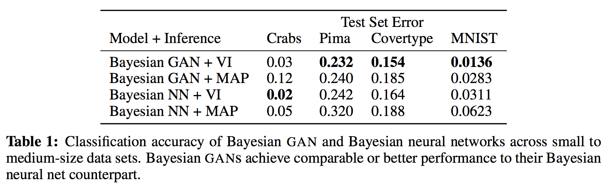
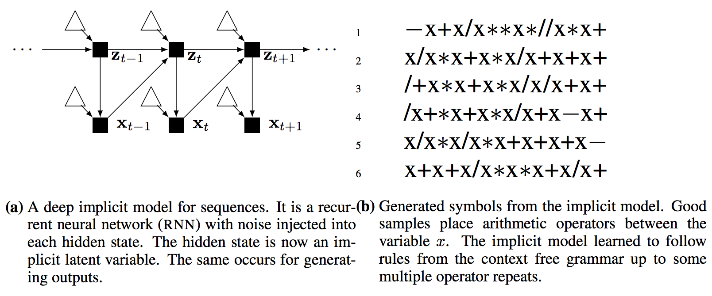

Hierarchical Implicit Models and Likelihood-Free Variational Inference
Вводная
В данной статье авторы придумали как делать приближенный байесовский вывод для моделей с неявно заданным правдоподобием, что это значит будет понятно далее. Авторы фиксируют определенный класс моделей и для них находят приближенное апостериорное распределение.
Implicit Probabilistic Models
Hierarchical Model
\[p(x, z, \beta) = p(\beta) \prod_{n=1}^{N}p(x_n | z_n, \beta ) p(z_n | \beta)\]
где \(x_n\) – наблюдения, \(z_n\) – локальная скрытая переменная, связанная с каждым объектом и \(\beta\) – глобальная скрытая переменная.
Hierarchical Implicit Model
В предыдущем пункте авторы вводят довольно таки общую модель, к которой можно сводить модели из реальных задач. Все плотности считаются вычислимыми, т.е. для набора \((x, z, \beta)\) мы можем взять и посчитать плотность. Теперь авторы предполагают, что пусть вычисление правдоподобия \(p(x_n | z_n, \beta)\) нам недоступно, но мы знаем, как получать сэмплы, т.е. нам доступен генеративный процесс:
\[x_n = g(\epsilon_n | z_n, \beta),\ \epsilon_n \sim s(\cdot)\]
где \(\epsilon_n\) - шум из известного распределения \(s(\cdot)\), из которого умеем сэмплировать, а \(g(\cdot)\) - детерминированная функция, которая по \(\epsilon_n, z_n, \beta\) выдает сэмпл \(x_n\). Тогда имея фиксированную модель \(p(x, z, \beta)\) мы можем легко получить сэмпл \((x, z, \beta)\), сначала просэмплировав глобальные переменные \(\beta\), затем \(z_n | \beta\), а потом и \(x_n | z_n, \beta\). При такой постановке модель считается Implicit так как подсчет плотности не доступен. Ниже можно видеть графическое представление описанных моделей.
Deep Implicit Models
По аналогии с нейросетями авторы предлагают сделать слои локальных скрытых переменных и вводят следующую модель:
\[ \begin{align*} z_{n, L} &= g_{L}(\epsilon_{n, L} | \beta_L),\quad \epsilon_{n, L} \sim s(\cdot) \\ z_{n, L-1} &= g_{L-1}(\epsilon_{n, L-1} | z_{n, L}, \beta_{L-1}),\quad \epsilon_{n, L-1} \sim s(\cdot) \\ & \dots \\ z_{n, 1} &= g_{1}(\epsilon_{n, 1} | z_{n, 2}, \beta_1),\quad \epsilon_{n, 1} \sim s(\cdot) \\ x_{n} &= g_{0}(\epsilon_{n, 0} | z_{n, 1}, \beta_{0}),\quad \epsilon_{n, 0} \sim s(\cdot) \end{align*} \]
В данном случае видим, что распределения на локальных скрытых переменных так же являются Implicit. Эту модель авторы особо не обсуждают и не изучают, просто говорят, что возможно построение и вывод в рамках такой модели используя придуманный подход. Далее ниже будем считать, что рассматривается модель Hierarchical Implicit Model (HIM).
Variational Inference for Implicit Models
Как всегда хотим получить \(p(z, \beta | x) = \frac{p(x, z, \beta)}{p(x)}\), но не можем, так как и так обычно все intractable, а теперь есть еще дополнительно невозможность вычислить плотность \(p(x, z, \beta)\). Будем искать постериор приближенно с помощью вариационного вывода. Напишем ELBO:
\[\mathcal{L} = \mathbb{E}_{q(\beta, z | x)} [\log p(x, z, \beta) - \log q(\beta, z | x)]\]
В качестве вариационного приближения будем рассматривать \(q(\beta, z | x) = q(\beta) \prod_{n=1}^{N} q(z_n | x_n, \beta)\). Подставим факторизации для \(p(\cdot)\) и \(q(\cdot)\) в \(\mathcal{L}\):
\[\mathcal{L} = \mathbb{E}_{q(\beta)} [\log p(\beta) - \log q(\beta)] + \sum_{n=1}^{N} \mathbb{E}_{q(\beta)q(z_n | x_n, \beta)}[\log p(x_n, z_n | \beta) - \log q(z_n | x_n, \beta)]\]
Здесь ни \(\log p(x_n, z_n | \beta)\), ни \(\log q(z_n | x_n, \beta)\) невычислимы 1. Поэтому авторы используют несколько трюков, описанных ниже.
Adding Empirical distribution function to \(\mathcal{L}\)
Пусть \(q(x_n)\) – эмпирическая функция распределения для наблюдений, а также будем считать, что вариационное совместное распределение \(q(x_n, z_n | \beta)\) факторизуется следующим образом: \(q(x_n, z_n | \beta) = q(x_n) q(z_n | x_n, \beta)\). Так как на стадии вывода данные фиксированы, то можно считать, что \(\log q(x_n)\) - константа. Соответственно вычтем \(\log q(x_n)\) из \(\mathcal{L}\), аргмаксимум от этого не поменяется, но трюк позволит сделать следующее:
\[ \begin{align*} \mathcal{L} &\propto \mathbb{E}_{q(\beta)} [\log p(\beta) - \log q(\beta)] \\ &+ \sum_{n=1}^{N} \mathbb{E}_{q(\beta)q(z_n | x_n, \beta)}[\log p(x_n, z_n | \beta) - \log q(z_n | x_n, \beta)] - \log q(x_n) \end{align*} \]
\[\mathcal{L} \propto \mathbb{E}_{q(\beta)} [\log p(\beta) - \log q(\beta)] + \sum_{n=1}^{N} \mathbb{E}_{q(\beta)q(z_n | x_n, \beta)}[\log \frac{p(x_n, z_n | \beta)}{q(x_n, z_n \mid \beta)}]\]
где \(\propto\) означает "с точностью до аддитивной константы". Таким образом, у нас в ELBO появляется log-ratio - логарифм отношения двух плотностей: \(\log \frac{p(x_n, z_n | \beta)}{q(x_n, z_n \mid \beta)}\), и если научиться его хорошо приближать, то сможем оптимизировать ELBO.
Ratio Estimation Trick
Пусть \(p^{*}(x)\) - истинное распределение, \(q_{\theta}(x)\) - модельное. \(X_p = \{x_1^{(p)}, \dots, x_n^{(p)}\}\) - сэмплы из \(p^{*}(x)\) и \(X_q = \{x_1^{(q)}, \dots, x_n^{(q)}\}\) - сэмплы из \(q_{\theta}(x)\). Введем переменную \(y\):
\[ y = \begin{cases} 1& \forall x \in X_p\\ 0 & \forall x \in X_q \end{cases} \]
Тогда: \(p^{*}(x) = p(x | y = 1)\) и \(q_{\theta}(x) = p(x | y = 0)\)
Подставим и воспользуемся формулой Байеса:
\[\small \frac{p^{*}(x)}{q_{\theta}(x)} = \frac{p(x | y = 1)}{p(x | y = 0)} = \frac{p(y=1 | x) p(x)}{p(y=1)} : \frac{p(y=0 | x) p(x)}{p(y=0)} = \frac{p(y=1 | x)}{p(y=0 | x)} \frac{p(y=0)}{p(y=1)}\]
\(\frac{p(y=0)}{p(y=1)}\) можно оценить по имеющейся выборке, это просто соотношения классов, а \(p(y=1 | x)\) можно моделировать с помощью классификатора (аналогично дискриминатору в GAN'ах). Обучать такой классификатор следует на так называемых proper scoring rules – функцииях потерь, с точки зрения которых лучше всего предсказывать вероятность первого класса, т.е.
\[\arg \min_{b \in \mathbb{R}} \mathbb{E}[L(y, b)] = p(y=1 | x)\]
Одна из таких функций потерь – log-loss, его и возьмем. Пусть \(p(y=1 | x) = \sigma(r(x, \lambda))\), где \(r(x, \lambda)\) – модель, предсказывающая логиты, \(\sigma(\cdot)\) – сигмоида, \(\lambda\) – параметры модели. Запишем log-loss:
\[L(\lambda, \theta) = \mathbb{E}_{p^{*}} [\log \sigma(r(x, \lambda))] + \mathbb{E}_{q_{\theta}}[\log (1 - \sigma(r(x, \lambda)))] \rightarrow \max_{\lambda}\]
Оптимизируя данный функционал в конечном счете мы и получим оценку для log-ratio. Давайте разберемся почему. В Goodfellow et al. 2014 (Generative Adversarial Networks) показано, что оптимизируя такой функцинал оптимальным алгоритмом будет:
\[a(x) = \frac{p^{*}(x)}{p^{*}(x) + q_{\theta}(x)}\]
В нашем случае \(a(x) = \sigma(r(x, \lambda))\), тогда:
\[\sigma(r(x, \lambda)) = \frac{p^{*}(x)}{p^{*}(x) + q_{\theta}(x)}\]
\[r(x, \lambda) = \log \frac{p^{*}(x)}{q_{\theta}(x)}\]
Мы видим, что обучая такой функционал, мы получаем то, что нам и требовалось - оценку для log-ratio. Возвращаясь к модели из статьи, запишем оптимизируемый функционал для получения оценки для log-ratio.
\[D_{\log} = \mathbb{E}_{p(x_n, z_n | \beta)} [-\log \sigma(r(x_n, z_n, \beta, \theta))] + \mathbb{E}_{q(x_n, z_n | \beta)}[-\log(1 - \sigma(r(x_n, z_n, \beta, \theta)))]\]
где \(\theta\) - параметры \(r(\cdot)\).
Gradients for stochastic optimization
Градиенты для оптимизации \(D_{\log}\) берутся без особых проблем:
\[\nabla_{\theta} D_{\log} = \mathbb{E}_{p(x_n, z_n | \beta)} [-\nabla_{\theta} \log \sigma(r(x_n, z_n, \beta, \theta))] + \mathbb{E}_{q(x_n, z_n | \beta)}[-\nabla_{\theta}\log(1 - \sigma(r(x_n, z_n, \beta, \theta)))]\]
Теперь будем считать, что оценивать log-ratio мы умеем и запишем "обновленное" ELBO:
\[\mathcal{L} = \mathbb{E}_{q(\beta)} [\log p(\beta) - \log q(\beta)] + \sum_{n=1}^{N} \mathbb{E}_{q(\beta)q(z_n | x_n, \beta)}[r(x_n, z_n, \beta, \theta)]\]
Предполагается, что \(p(\beta)\) и \(p(z_n | \beta)\) - дифференцируемые. А также, что \(q(\beta)\) и \(q(z_n | x_n, \beta)\) репараметризуемые и в добавок мы должны уметь считать плотность \(q(\beta)\), что видно из формулы для ELBO. Репараметризуемость нужна для использования reparametrization trick и получения несмещенных градиентов:
\[\beta = T_{global}(\delta_{global}, \lambda),\ \delta_{global} \sim s(\cdot)\]
где \(T_{global}\) - дифференцируемое детерминированное преобразование, а \(\lambda\) - вариационные параметры. Аналогично для \(z_n | x_n, \beta\):
\[z_n = T_{local}(\delta_{n}, x_n, \beta, \phi),\ \delta_{n} \sim s(\cdot)\]
где \(T_{local}\) - дифференцируемое детерминированное преобразование, а \(\phi\) - вариационные параметры. Как видно из формулы для ELBO для \(q(z_n | x_n, \beta)\) нет требования на умение считать плотность, поэтому в качестве вариационного приближения для этого распределения можно использовать implicit distribution. Таким образом, используя репараметризацию получаем градиенты:
\[\nabla_{\lambda} \mathcal{L} = \mathbb{E}_{s(\delta_{global})}[\nabla_{\lambda}(\log p(\beta) - \log q(\beta))] + \sum_{n=1}^{N}\mathbb{E}_{s(\delta_{global})s(\delta_n)}[\nabla_{\lambda} r(x_n, z_n, \beta)]\]
где градиенты протекают через дифференцируемое преобразование \(\beta = T_{global}(\cdot)\). Аналогично для \(\phi\):
\[\nabla_{\phi} \mathcal{L} = \sum_{n=1}^{N} \mathbb{E}_{q(\beta)s(\delta_n)}[\nabla_{\phi}r(x_n, z_n, \beta)]\]
Все градиенты получаются путем Монте Карло оценок. В итоге получаем следующий алгоритм:
Как мы можем видеть, по сравнению с GAN'ами, где дискриминатор учится несколько эпох, а затем делается апдейт весов генератора, здесь все веса обновляются вместе. То есть сначала все нужные переменные сэмплируются, затем идет подсчет градиентов и одновременное обновление весов и так до сходимости.
Experiments
Модель Лотки — Вольтерры взаимодействия двух видов типа "хищник-жертва"
Эта модель представляет из себя процесс генерации данных следующего вида:
\[ \frac{dx_1}{dt} = \beta_1 x_1 - \beta_2 x_1 x_2 + \epsilon_1, \quad \epsilon_1 \sim \mathcal{N}(0, 10) \\ \frac{dx_2}{dt} = -\beta_2 x_2 + \beta_3 x_1 x_2 + \epsilon_2, \quad \epsilon_2 \sim \mathcal{N}(0, 10) \]
где \(x_1,\ x_2 \in \mathbb{R}_{+}\) - популяции жертв и хищников соответственно, а \(\beta_1,\ \beta_2,\ \beta_3\) - начальные параметры этого процесса на который делается вывод. То есть фиксируются какие-то беты, идет симуляция процесса с помощью сэмплирования и таким образом получаются "иксы" - по сути временной ряд. Задача - оценить начальные беты. Авторы накладывают логнормальное априорное на \(\beta_1,\ \beta_2,\ \beta_3\). Локальных скрытых переменных тут нет. На \(\beta\) в качестве вариационного приближения авторы берут полностью факторизованное нормальное распределение, делают инференс с помощью придуманного им метода и сравнивают с различными методами(ABC, MCMC-ABC, SMC-ABC), показывая, что их способ точнее находит верные беты, а также что он масштабируемый.
Bayesian GAN
GAN:
\[x_n = g(\epsilon_n, \theta),\ \epsilon_n \sim s(\cdot)\]
где \(g(\cdot)\) - нейронная сеть, \(\theta\) - её параметры и \(s(\cdot)\) - шум (нормальный или равномерный). Байесовским GAN'ом авторы называют все то же самое, только еще накладывают на \(\theta\) априорное распределение. Они рассматривают следующий байесовский GAN:
\[y_n = g(x_n, \epsilon_n | \theta),\ \epsilon_n \sim \mathcal{N}(0, 1)\]
где \(y_n = \{1, \dots, K\}\), \(g(\cdot | \theta)\) - двуслойная полносвязная нейронка с ReLU и batch-norm'ом. На веса этой нейронки накладывают нормальное априорное распределение: \(\theta \sim \mathcal{N}(0, 1)\).
В качестве моделей для вариационного приближения для \(\theta\) авторы рассматривают mean field аппроксимацию в семействе полностью факторизованных нормальных распределений и MAP оценку. Байесовский GAN они сравнивают с байесовской нейронной сетью, которая имеет аналогичный генеративный процесс для \(y_n\), но вместо добавления шума \(\epsilon_n\), в байесовской нейронной сети, сначала получают распределение на метках и потом производится сэмплирование из категориального распределения на метках. Для байесовской нейронной сети авторы берут аналогичные вариационные приближения. Авторы тестируют модели на нескольких задачах классификации и показывают, что байесовский GAN работает лучше.

Injecting Noise into Hidden Units (самый плохо описанный эксперимент)
Авторы предлагают добавить шум и implicit distribution в RNN: пусть \((x_1, \dots, x_T)\) - последовательность токенов и
\[z_t = g_z(x_{t-1}, z_{t-1}, \epsilon_{t, z}),\quad \epsilon_{t, z} \sim \mathcal{N}(0, 1)\] \[x_t = g_x(z_t, \epsilon_{t, x}),\quad \epsilon_{t, x} \sim \mathcal{N}(0, 1)\]
где \(g_z\) и \(g_x\) - линейные преобразования с последующей ReLU активацией и LayerNorm'ом. На веса и байесы накладывают стандартное нормальное априорное. В качестве вариационного приближения авторы берут аналогичную implicit model, только видимо наоборот, по \(x\)-ам генерируются \(z\)-ки. Авторы тестируют модель на задаче генерации правильной последовательности арифмитических операций и переменных при написании формулы и получают что-то адекватное.

Stability of Ratio Estimator (Appendix)
Авторы взяли байесовскую линейную регрессию, где можно аналитически посчитать log-ratio и показали, что с течением итераций их алгоритма оценка для log-ratio становится лучше.
Выводы
В данной статье авторы придумали метод вывода для моделей с неявным правдоподобием. Авторы рассмотрели довольно общую модель состоящую из наблюдений, глобальных и локальных скрытых переменных, в которой функция правдоподобия задана генеративным процессом и вычисление плотности нам не доступно. Так же были проведены довольно таки разные эксперименты и было показано, что это работает. В плане общих математических трюков можно обратить внимание на Ratio Estimation Trick.
Примечание А. Соболева: думаю, можно было бы задать приближённое апостериорное \(q(z_z|x_n, \beta)\), плотность которого можно было бы посчитать, но выразительная сила такого распределения была бы невелика, поэтому лучше рассмотреть неявное приближение.↩